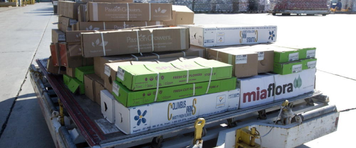
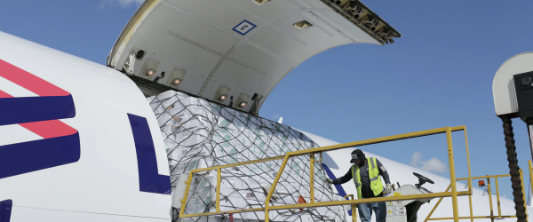

Многие мелкооптовые цветочные компании, которые осуществляют попытки самостоятельной закупки у плантаций, постоянно сталкиваются с массой непредвиденных проблем.
Обычно такие фирмы не имеют возможности работать с большим количеством плантаций. Ассортимент трех-пяти плантаций, у которых мелкооптовая фирма может закупать цветы, вряд ли перекроет всю потребность в закупке цветов. При этом нужно ещё и не ошибиться в координации с транспортными агентами, забронировать место на авиалиниях для своевременной отправки цветочных грузов.
Может случиться так, что спланированная заранее ключевая закупка у нужной плантации окажется невозможной. Причинами этого могут стать временное сезонное падение качества цветов, или просто коммуникационная проблема, из-за которой плантация не выдаст требуемый ассортимент и объём цветов. Нельзя исключить и такой возможности, что к плантации придёт крупный брокер и перекупит цветы, которые ранее были предназначены для мелкого клиента.
Именно поэтому Daoflowers делит риски и работает более чем с двумя сотнями плантаций на регулярной основе и ещё около 50 плантаций подключает к активной закупке в период максимальных скачков спроса. Благодаря широкому выбору, Daoflowers всегда выполнит заказ оптимальными плантациями, согласно предпочтениям клиентов, а цены будут более чем конкурентоспособны.
Индивидуальный подход, забота о каждом клиенте и каждой закупленной позиции – это не просто слова. Мы отчетливо понимаем, что конкуренция на рынке цветов достаточно жесткая, и любой недочет, любая оплошность может привести к тому, что новые заказы не поступят. Поэтому с каждым заказчиком индивидуально работают наши сотрудники, закупка цветов ведется таким образом, чтобы обеспечить оптимальное выполнение потребностей клиента, обеспечить лучшую возможную цену (в требуемом сегменте качества) и исключить неприятные неожиданности. Если заказы поступают вовремя, мы обычно оставляем 2-3 дня на закупку цветов у Эквадорских, Колумбийских и Кенийских плантаций, что позволяет проконтролировать доставку цветов в аэропорты отправки. Помимо этого мы предоставляем клиентам инструменты online контроля над состоянием их заказов на нашем сайте а также инструменты для ежедневной закупки цветов со свободного рынка.
Плантации, как правило, не занимаются логистикой. Они просто доставляют коробки в аэропорт к транспортному агенту, которого определяет клиент, и на этом ответственность плантаций заканчивается. Правда, есть несколько ферм-исключений, которые стараются доставить коробки клиента в нужном направлении, однако, лучше доверить логистику специалистам.
Daoflowers работает напрямую с лучшими транспортными агентами в Quito, Bogota, лидерами по объёмам доставки цветочной продукции в Европу и Северную Америку. Благодаря еженедельным регулярным поставкам Daoflowers имеет приоритет загрузки в самолёты самых надёжных авиакомпаний на рынке доставки цветов а также существенные скидки в тарифах по сравнению с клиентами, которые доставляют для себя 10-20 коробок цветов в неделю. Очевидно, что в праздничный период Daoflowers первыми получают места на самых надёжных чартерных самолётах.
Мы всегда знаем, в каком месте сейчас находится цветочный груз, каков температурный режим в процессе доставки, и когда поставка должна прибыть в точку назначения. Знаем и оперативно проинформируем заказчика.
Плантации – производители цветов могут видеть online, какие коробки с какими маркировками клиентов должны доставляться в аэропорты сегодня.
Транспортные агенты могут просматривать online, какие грузы для каких клиентов привезут плантации, заранее формировать авианакладные. Как только закупается любая новая позиция, её видят клиенты, плантации, транспортные агенты.
Клиенты могут закупать, а плантации продавать позиции в автоматическом режиме, для этого нами подготовлена специальная электронная торговая площадка. Отличие этой площадки от традиционных web-shop заключается в том, что мы не работаем со стоками. Вся продукция, которая покупается и продается на электронной площадке, с высокой вероятностью будет доставлена в точку, определенную клиентом. Цветы покупаются свежесрезанными на фермах, поэтому они должны быть вначале доставлены плантациями в аэропорты, вовремя отправлены надежными авиалиниями и доставлены заказчикам. Принимая во внимание сложность логистики, мы прилагаем усилия, чтобы вероятность успешной закупки на электронной площадке приближалась к вероятности закупки цветов, заказанных заранее в виде предварительного заказа.
По объему и качеству электронных сервисов, доступных для участников бизнеса, daoflowers.com уверенно занимает лидирующую позицию на рынке.